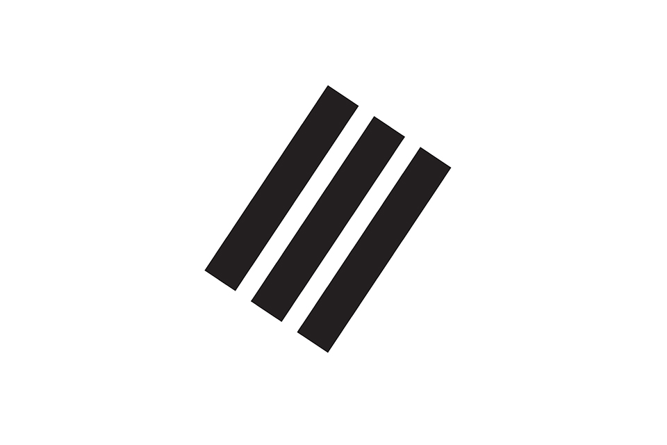
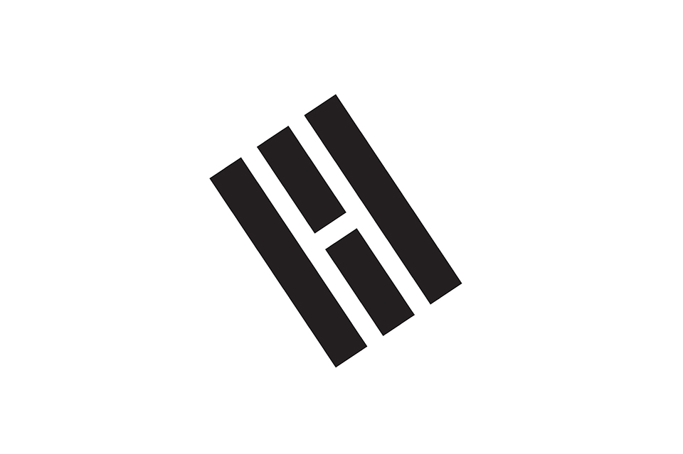
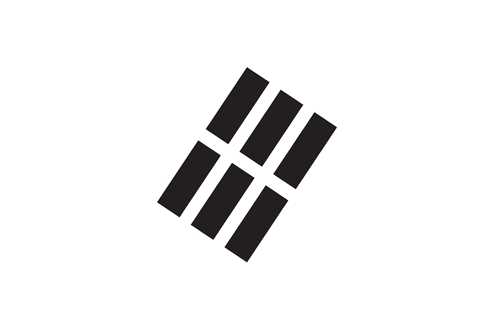

Korea
Republic of
태극기
太 極 旗
太 極 旗
국기에 대한 경례
나는 자랑스러운 태극기 앞에
자유롭고 정의로운 대한민국의
무궁한 영광을 위하여
충성을 다할 것을 굳게 다짐합니다
흰색
바탕
: 밝음과 순수, 전통적으로 평화를 사랑하는 우리의 민족성을 나타냅니다
태극
: 태극 문양은 음(파랑)과 양(빨강)의 조화를 상징하는 것으로
우주 만물이 음양의 조화로 인해 생명을 얻고 발전한다는 대자연의 진리를 표현해낸 것입니다
사괘
: 우리나라의 국기인 태극기의 모서리에 표현되어 하늘과 땅, 물과 불을 상징하는 4개의 괘이다.
  
건 : 하늘, 봄, 동쪽
곤 : 땅, 여름, 서쪽
감 : 물, 겨울, 북쪽
리 : 불, 가을, 남쪽
대 한 민 국
大 韓 民 國